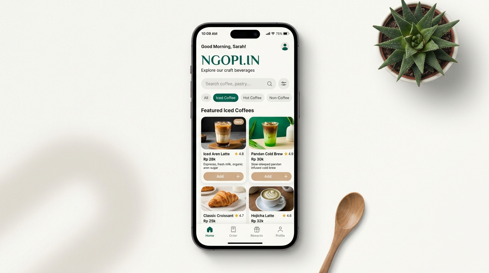
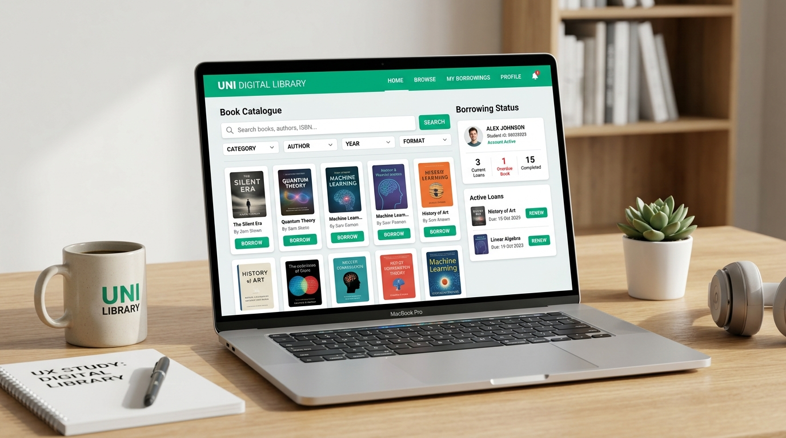
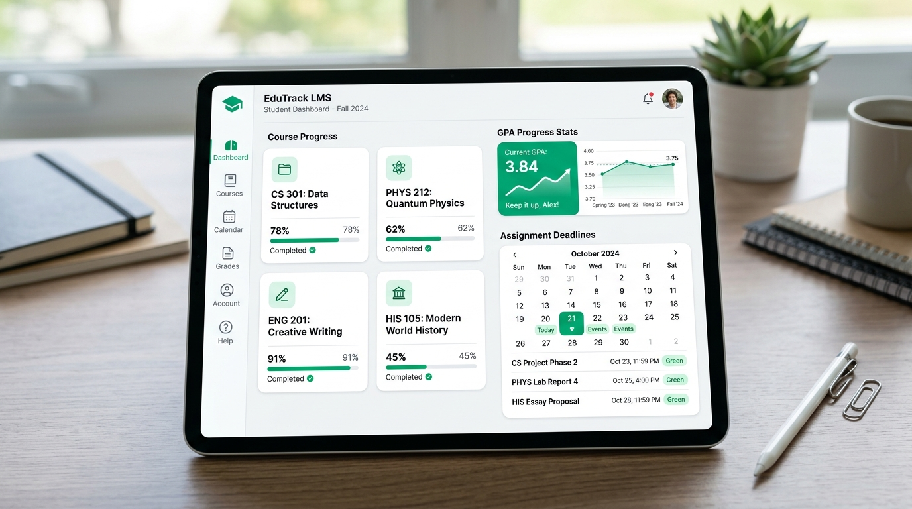

Hi, I'm Syafira.
Saya mahasiswa Sistem Informasi semester 5 yang memiliki ketertarikan pada UI/UX Design, khususnya dalam merancang interface yang menarik, sederhana, dan mudah digunakan.
Sistem Informasi • Semester 5
Saya adalah mahasiswa Program Studi Sistem Informasi semester 5 yang memiliki ketertarikan pada bidang UI/UX Design. Saya senang mempelajari bagaimana sebuah desain dapat membuat suatu produk digital menjadi lebih mudah dipahami, nyaman digunakan, dan memiliki tampilan yang menarik.
Latar belakang Sistem Informasi memberi saya pemahaman komprehensif mengenai alur bisnis, analisis kebutuhan pengguna, hingga arsitektur data. Bagi saya, desain bukan hanya tentang estetika visual semata, melainkan tentang bagaimana memecahkan masalah nyata dan memberikan pengalaman terbaik bagi pengguna melalui antarmuka yang intuitif.
Memahami analisis proses bisnis, struktur data, dan kebutuhan sistem digital.
Fokus mendalam pada human-centered design, alur pengguna, dan prototipe interaktif.
Peka terhadap konsistensi visual, whitespace, tipografi rapi, dan hierarki informasi.
Senantiasa mengikuti tren desain antarmuka terbaru dan memperdalam studi kasus nyata.
Mengkombinasikan metodologi perancangan antarmuka, penguasaan software industri, dasar pengembangan web, serta fondasi analisis sistem informasi.
Eksplorasi antarmuka digital yang dirancang dengan memadukan riset kebutuhan pengguna, arsitektur informasi terstruktur, dan visual estetis.

F&B AppPerancangan dan pengembangan aplikasi pemesanan makanan dan minuman untuk Cafe Ngopi.in dengan fokus pada kemudahan pengguna dalam melihat menu dan melakukan pemesanan.

Academic WebPerancangan interface digital library untuk memudahkan mahasiswa dalam mencari, melihat detail, dan mengelola informasi buku serta alur peminjaman.

Student DashboardPerancangan interface student dashboard untuk monitoring progres tugas kuliah, target IPK mingguan, dan pengingat deadline akademik berbasis visual clean.
Saya percaya bahwa desain yang hebat berakar dari pemahaman mendalam terhadap masalah pengguna, bukan sekadar mempercantik tampilan visual.
Memahami kebutuhan, perilaku, dan hambatan pengguna melalui wawancara, kuesioner, dan analisis kompetitor untuk menggali wawasan nyata.
Mengolah temuan riset untuk merumuskan core problem statement, menyusun user persona, dan memetakan alur journey pengguna secara objektif.
Mengeksplorasi ragam alternatif solusi, merancang arsitektur informasi (IA), user flow alur proses, dan menyusun sketsa wireframe awal (Lo-Fi).
Mentransformasikan konsep menjadi high-fidelity UI dengan panduan design system, konsistensi komponen di Figma, dan interaksi prototipe dinamis.
Menguji prototipe langsung ke pengguna untuk mengidentifikasi kendala usability, mengumpulkan feedback, dan melakukan iterasi penyempurnaan desain.
Rekam jejak kontribusi dalam organisasi kampus, kepanitiaan teknologi, proyek studi independen, dan kegiatan peningkatan skill.
Bertanggung jawab dalam merancang identitas visual, feed media sosial edukatif, dan poster publikasi kegiatan jurusan Sistem Informasi dengan pendekatan visual yang konsisten.
Aktif mengikuti sesi diskusi mingguan mengenai tren UI/UX, bedah studi kasus desain aplikasi, dan peer-review wireframe antar anggota.
✏️ Placeholder — Dapat diedit sesuai organisasi lainApresiasi dan pencapaian selama perkuliahan yang memicu motivasi untuk terus menghasilkan karya yang bernilai.
Merancang solusi prototipe aplikasi mobile bertema inovasi digital layanan masyarakat dengan penilaian pada aspek usability dan riset pengguna.
✏️ Placeholder — Silakan sesuaikan nama lomba & tahunMenyelesaikan pelatihan daring intensif mencakup alur User Research, Wireframing, User Interface Guidelines, dan Usability Testing.
✏️ Placeholder — Bisa diisi sertifikat Google UX / Coursera / DicodingMeraih predikat akademik memuaskan dengan konsistensi pada mata kuliah Desain Antarmuka, Basis Data, dan Rekayasa Perangkat Lunak.
✏️ Placeholder — Silakan sesuaikan dengan capaian kampus AndaSaya selalu terbuka untuk tawaran magang UI/UX, kolaborasi project website, maupun diskusi seputar desain antarmuka digital.